Gestione servizi post-vendita
Le procedure di reso e scambio è preferibile effettuarle da PC di cassa o banchetto.
14.1 Reso caparra
Accedere all' Elenco ordini e successivamente alla lista caparra. Eseguire la ricerca dell'ordine con caparra, cliccare "Torna" ed inserire la ragione di reso.
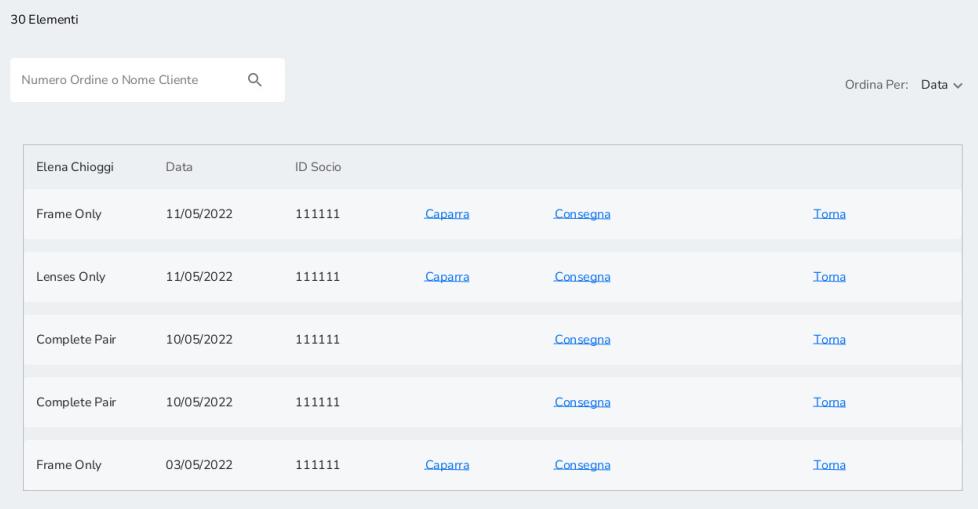
Inserire la Ragione di Reso in merito a tale richiesta.
Una volta passati in Xstore verrà richiesto di aggiungere una nota. Dopodiché, cliccare OK per proseguire.
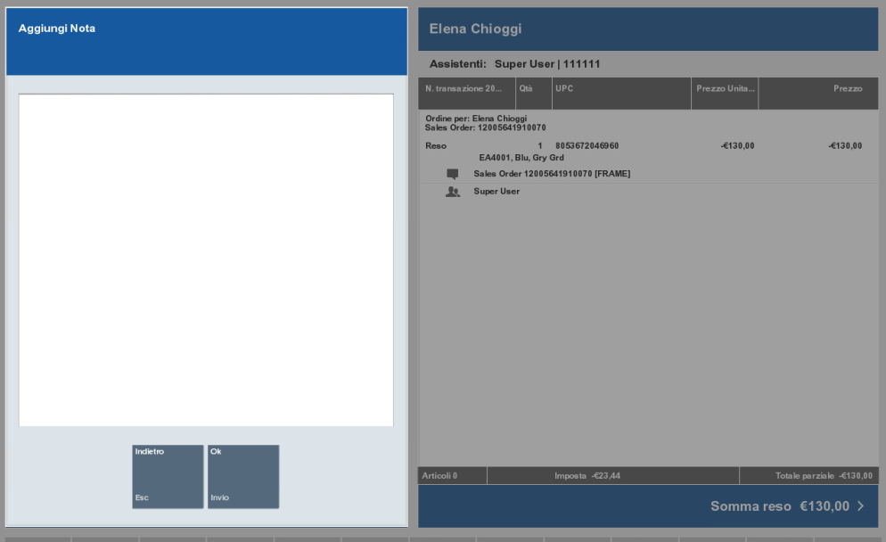
Sarà il sistema stesso a proporvi cosa rendere in contanti e cosa verrà tolto automaticamente da In attesa di pagamento.
Sarà il sistema stesso a ricordare la quantità della caparra inserita.
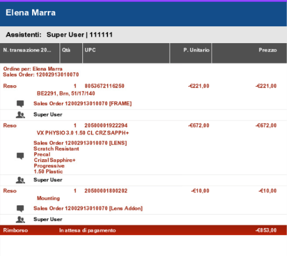
Procedendo con la scelta del metodo di pagamento il sistema vi propone la somma di reso corretta, cioè la caparra per quel specifico WO.
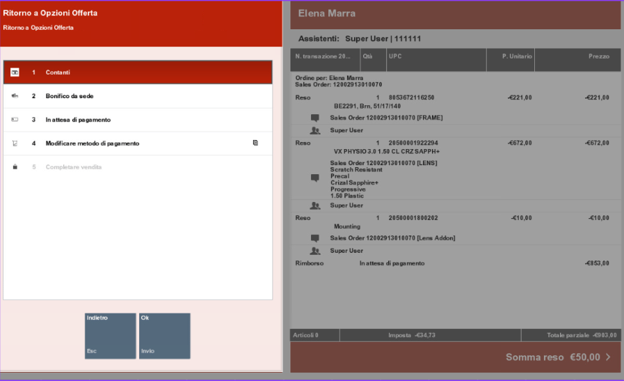
GIOVA OSSERVARE CHE: qualora si voglia eseguire un reso per un errore/modifica nel WO che non abbia comportato un reale pagamento, si andrà a selezionare In attesa di pagamento per l'intera cifra.
Esempio: Viene eseguito un ordine di 329 euro e pagata una caparra di 29. Qualora si volesse rendere, andremo a selezionare Lista Caparre, cercheremo l'ordine, selezioneremo Torna, inseriremo una Nota in Xstore e selezioneremo Aggiunta Pagamenti.
Selezioniamo la modalità Contanti ed inseriremo manualmente la cifra di 29 euro, per i restanti 300 euro andremo a selezionare la modalità 'In attesa di pagamento'.
Qualora si voglia eseguire un reso per un errore/modifica del WO che non abbia comportato un reale pagamento, si andrà a selezionare 'In attesa di pagamento' per l'intera cifra.
14.2 Incamera caparra
Nella lista Caparra sono presenti gli ordini per i quali è stata presa caparra.
Al fine di incamerare la caparra per un ordine che ha superato i due mesi e dopo le relative comunicazioni, selezionare il tasto Converti per incassare la caparra.

Successivamente si aprirà in XStore dove dovrà essere inserita una nota.
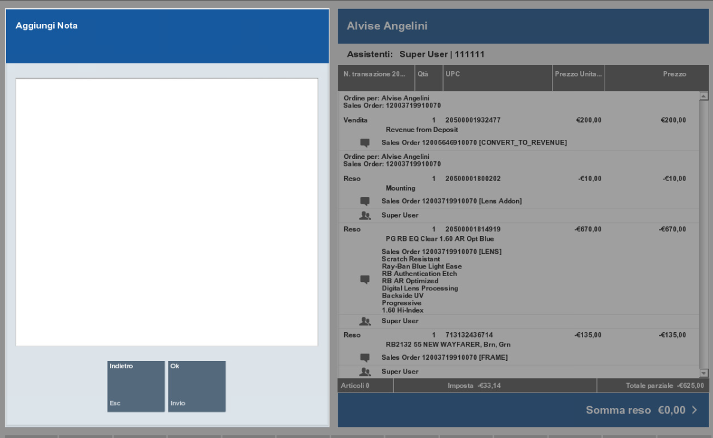
Dopo aver selezionato Transazione completata (dove in automatico viene rappresentato il valore che deve essere incamerato), verranno emessi due scontrini non fiscali. (selezionare solo stampa, non e-mail altrimenti viene ricevuta dal cliente).
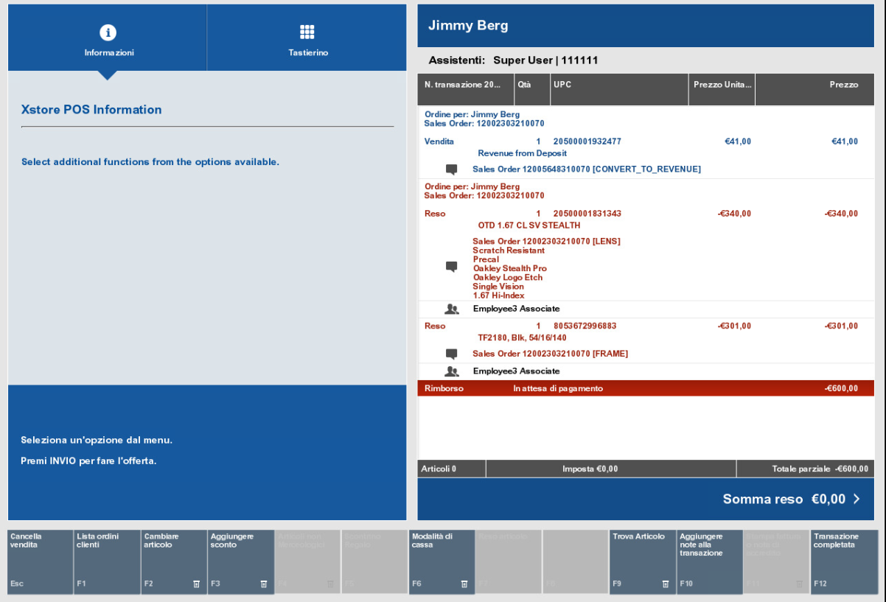
14.3 Reso cliente con vendita effettuata su Ciao!
Per effettuare un reso cliente seguire i seguenti passaggi:
-
Accedere alla sezione Ricerca Cliente e ricercare il cliente d'interesse con le modalità viste al capitolo 3.1.
-
Accedere al suo Profilo Cliente
-
Selezionare Storico ordini e ricercare l'ordine. In questa sezione verranno mostrate automaticamente le vendite dalla più recente alla meno recente.
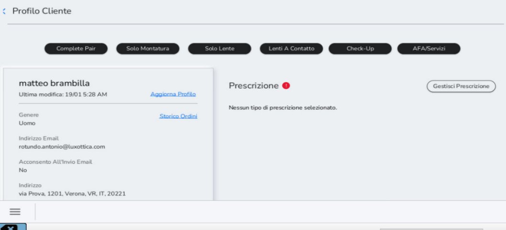
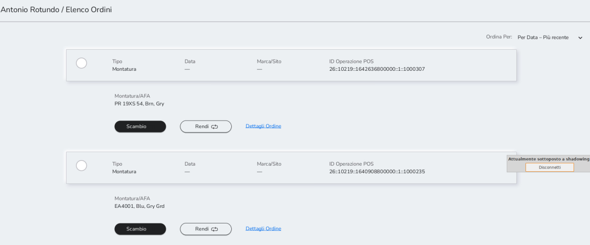
Cliccare su Rendi in corrispondenza dell'ordine d'interesse. Per vedere meglio le specifiche dell\'ordine, selezionare Dettagli ordine.
È possibile procedere al reso di più articoli selezionabili dallo storico ordini del profilo clienti (Ad esempio se si tratta di un frame only ed un lens only, oppure un accessorio ed un frame only, ecc...)
La richiesta multipla di reso non può essere effettuata nel caso di Complete Pair.
Selezionare la motivazione del reso tra quelle proposte nel menù a tendina, a seconda che si tratti di un reso gestionale o un reso denaro ci saranno delle causali specifiche. La voce Modifica WO serve per le modifiche gestionali (ristampa fattura cambiando indirizzo, aggiunta garanzia..)
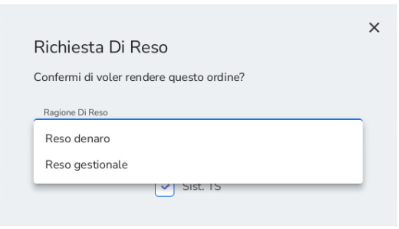
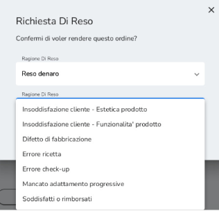
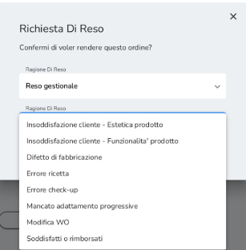
- Cliccare su Vai a pagamento per procedere alla conclusione del reso in Xstore. In alternativa, cliccare su Conferma Richiesta per salvare l'ordine nella lista di ordini attivi. Gli articoli per cui si è avviata una procedura di reso, senza concluderla, figurano in Stato In Reso
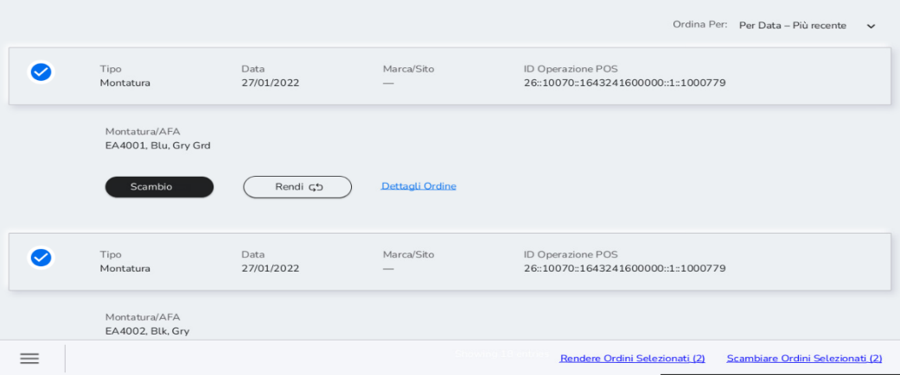
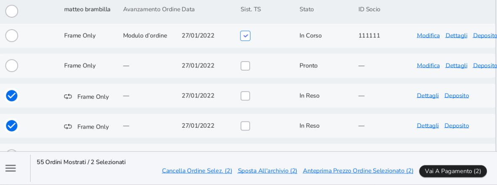
- Una volta selezionato Vai A Pagamento, su Xstore, viene richiesta l'aggiunta di una nota, inserirla e cliccare su Ok. In alternativa è possibile scannerizzare da iPad selezionando Cattura ID Scontrino (da ricerca su Customer Order), per catturare il barcode. Il sistema mostra all'interno dei Risultati Ricerca il cliente desiderato. Dalla sezione Storico Ordini del profilo cliente, cliccare su Rendi, oppure, è anche possibile spuntare la check-box dell'ordine e successivamente cliccare su Rendere Ordini Selezionati.
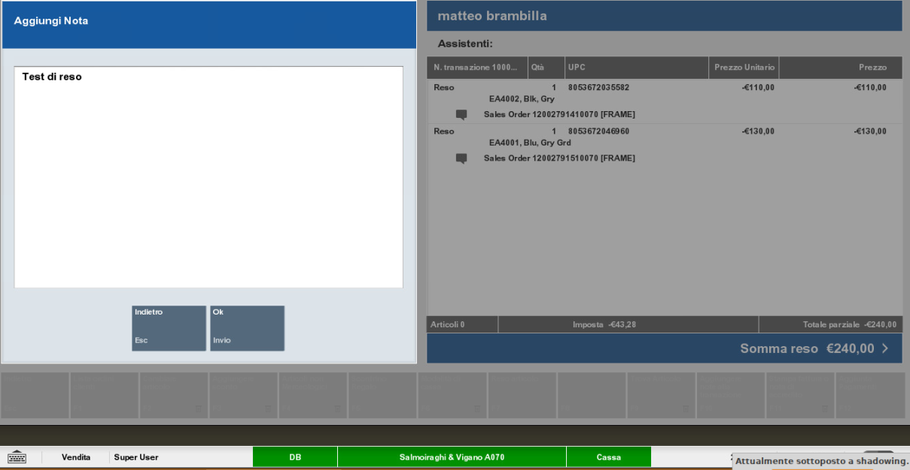
-
Selezionare Aggiunta Pagamenti. Successivamente selezionare la modalità di rimborso:
-
Contanti: reso in contanti
-
Bonifico da sede: bonifico da parte del team GBS a seguito di un'apertura di GLPI.
La procedura di reso con rimborso tramite bonifico va richiesta soltanto in casi eccezionali per i quali non sussista altra soluzione se non un pagamento da sede.
I casi accettati sono resi a clienti residenti all'estero impossibilitati a recarsi in negozio, resi di importi superiori al limite di trasferimento denaro contante, resi a Findomestic per annullamento pratica.
Non sono ammesse richieste di bonifico:
• per importo inferiore al valore del fondo cassa o in presenza di contante in cassaforte superiore al valore del reso (per rimborsare il cliente si possono utilizzare sia i contanti presenti nel fondo cassa, sia i contanti in cassaforte in attesa di essere versati;
• per clienti che non vogliono tornare in store perché di altre città (è possibile fare i resi in un qualunque store della catena
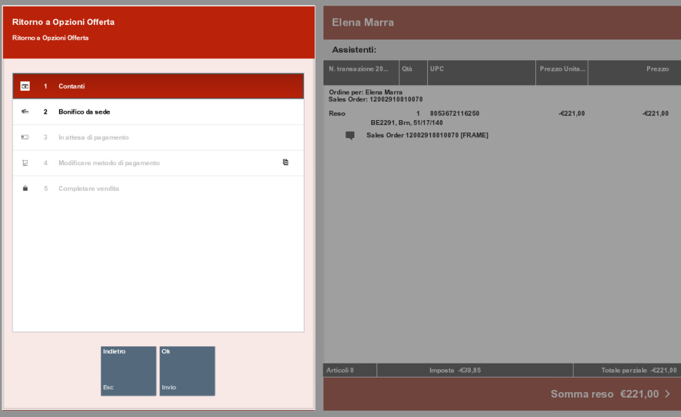
Gli articoli resi sono visualizzati in rosso.
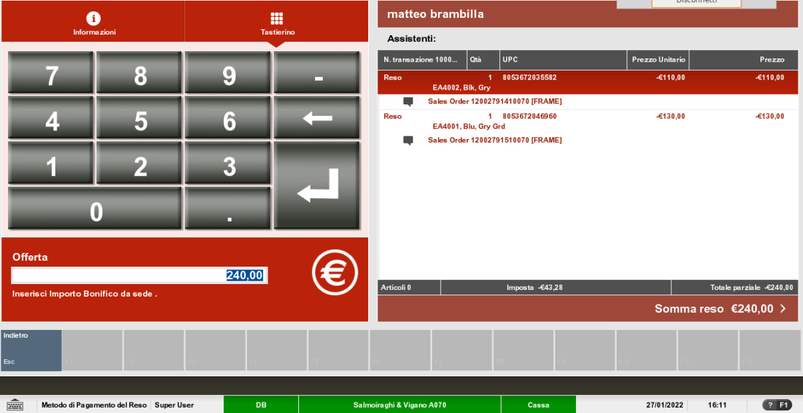
- Selezionare un metodo di ricezione per i documenti di reso.
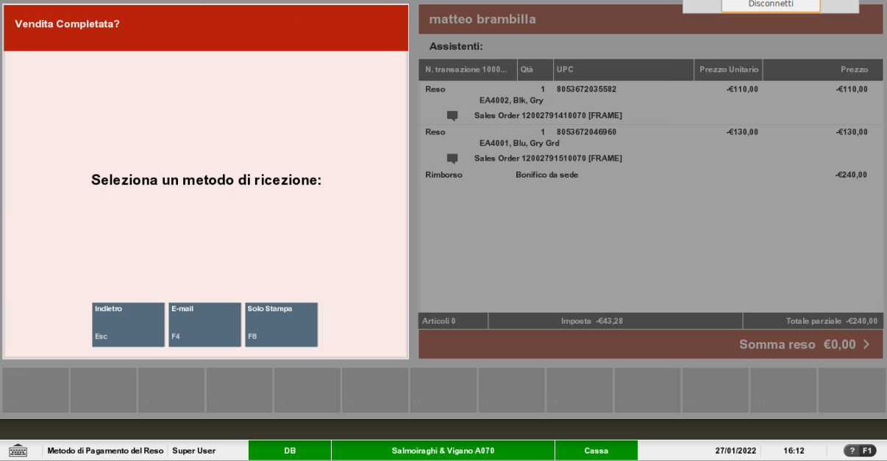
-
Al termine dell'operazione di reso, il sistema dovrà erogare la seguente documentazione:
-
Reso fiscale (nota di credito)
-
Pratica di reso non fiscale in doppia copia, una che va fatta firmare al cliente e si tiene in negozio, l'altra che si consegna al cliente.
-
14.4 Cancellazione Ordine di Reso
Su Xstore nella sezione pagamento è possibile annullare l'operazione di reso, cliccando su Cancellazione Vendita.
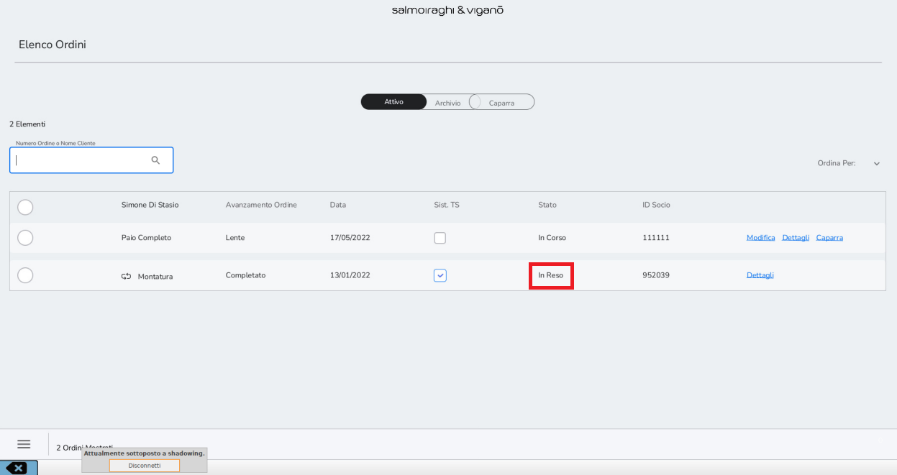
Per procedere alla cancellazione di un'operazione di reso non portata a termine, cliccare su Elenco Ordini. Nella sezione attivi, ricercare per Numero Ordine o Nome Cliente, l'ordine in questione risulterà In Reso.-
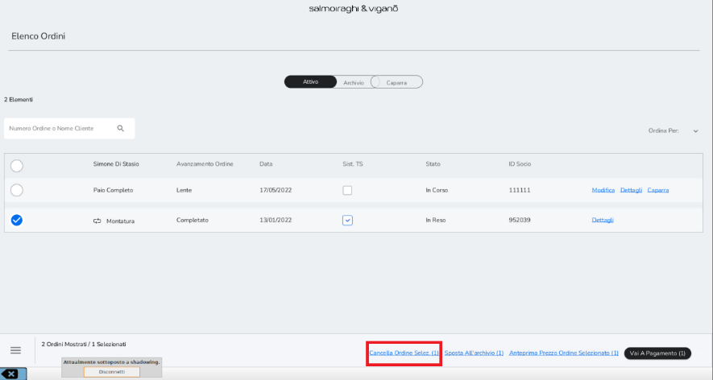
Selezionare l'ordine da rendere e cliccare su Cancella Ordine Selezionato. -
Cliccare su Si per cancellare l'ordine selezionato.
-
L'ordine risulterà nello Storico Ordini del cliente.
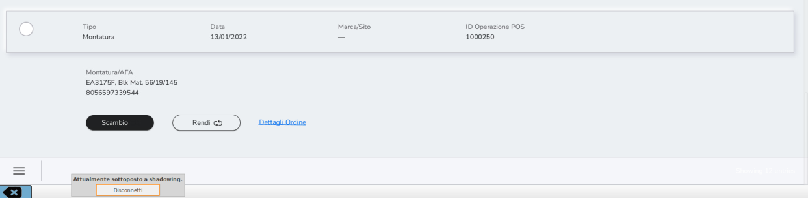
14.5 Reso cliente con vendita effettuata su Acuitas
Lo storico vendite del negozio registrato su Acuitas è stato importato all'interno dello strumento Lookup Tool (vedere capitolo 1.2). L'app Lookup Tool è uno strumento accessibile dal Tool Kit e permette di recuperare e consultare tutte le vendite effettuate su Acuitas negli ultimi tre anni.
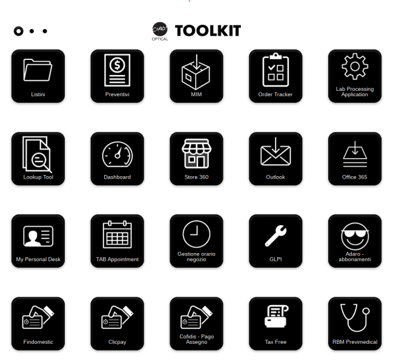
Dopo aver effettuato l'accesso a Lookup Tool, in caso di richiesta di reso cliente con uno scontrino generato da Acuitas, la ricerca può avvenire attraverso uno dei seguenti campi. I campi che si consiglia di utilizzare sono Nome e Cognome del cliente o il numero dello scontrino fiscale.
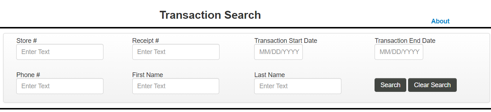
Per aprire i dettagli di una delle transazioni risultanti dalla ricerca è necessario cliccare sul numero della transazione.
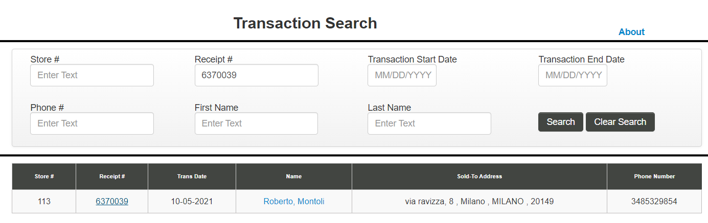
I primi dettagli mostrati sono relativi al negozio dove è stata effettuata la vendita, il numero di scontrino, la data della vendita e il nome ed il cognome del cliente.
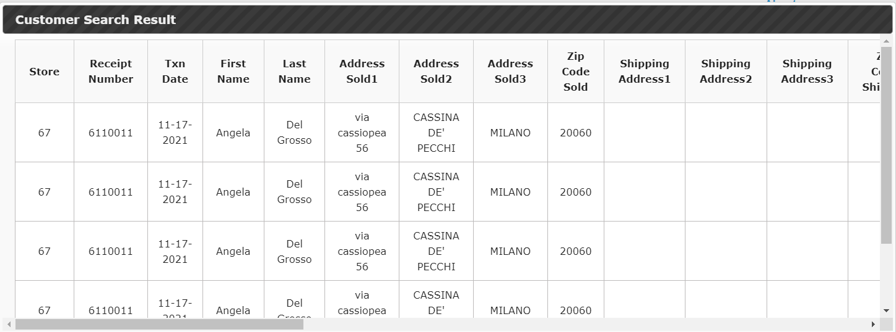
Spostandosi verso destra è possibile poi vedere altre informazioni della vendita quali:
a. Elenco prodotti venduti con relativi codici, descrizione dell'articolo, prezzo, eventuale sconto applicato e tasse
b. Valore totale della transazione dato dalla somma dei prezzi dei prodotti elencati. La colonna Total ripete il valore totale della transazione in ogni riga. In questo esempio quindi il valore totale della transazione è pari a 660€
c. Dettaglio dei metodi di pagamento utilizzati per questa vendita:
Tender Deposit: valore caparra
Tender CC: parte della vendita pagata in carta o bancomat
Tender Gift: parte della vendita pagata con gift card
Tender 1 Desc + Tender 1 Amt: parte della vendita pagata attraverso finanziamenti (Findomestic o PagoDIL) o Adaro (nella casella Desc viene riportato il nome del metodo di pagamento e nella casella Amt il valore)
Tender 2 Desc + Tender 2 Amt: parte della vendita pagata attraverso assicurazione (nella casella Desc viene riportato il nome dell'assicurazione e nella casella Amt il valore)
Notes: parte della vendita pagata attraverso altri metodi di pagamento residuali (Satispay, Clicpay, buoni convenzioni)
La somma dei valori riportati in una riga in questa sezione è pari al totale della transazione. Tali valori sono arrotondati per eccesso o per difetto in quanto non vengono riportati numeri decimali. È quindi consigliato di fare affidamento allo scontrino cartaceo poiché riporta il valore esatto della vendita.
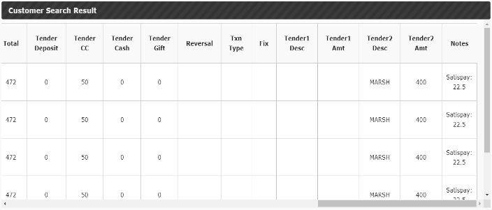
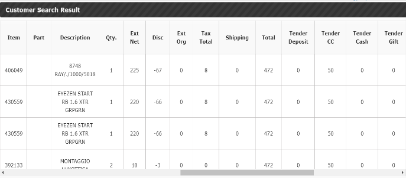
- Accedere a Xstore e selezionare Reso articolo.
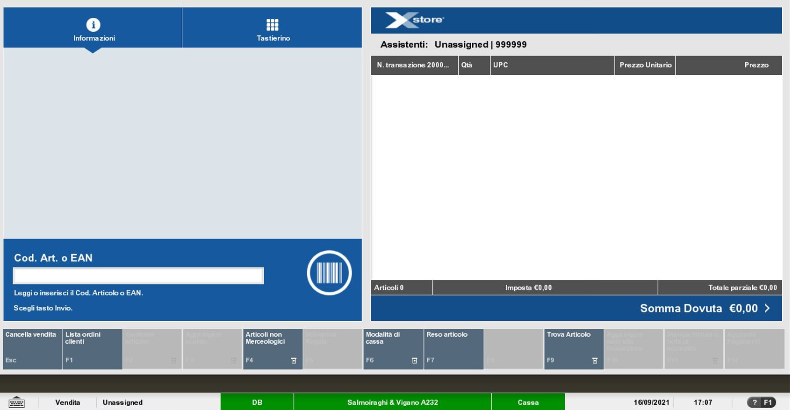
- Inserire le informazioni del cliente che procede al reso e selezionare Salva Modifiche.
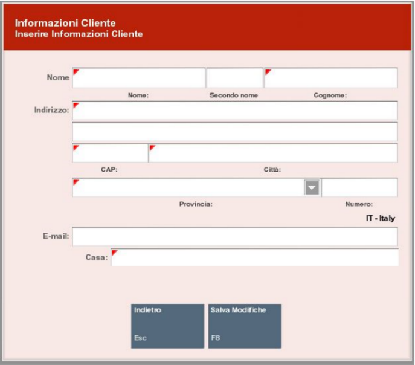
- Nella schermata successiva Rientro selezionare Sì
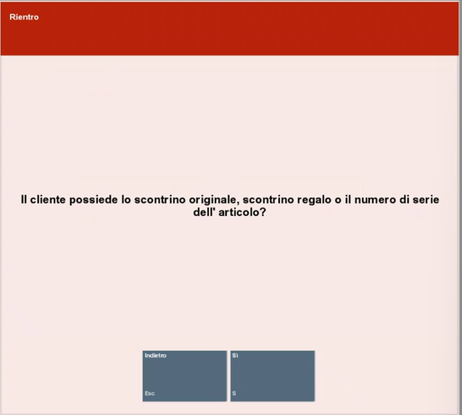
- Successivamente inserire le informazioni della vendita precedente e cliccare su Conferma. Il codice negozio da inserire è 10 + Numero SAP di negozio (es: per negozio A070 inserire 10070).
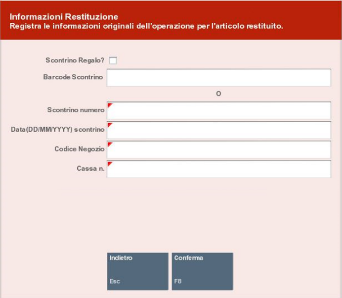
- Nella schermata 'Scontrino Originale' cliccare su Nessuna informazione
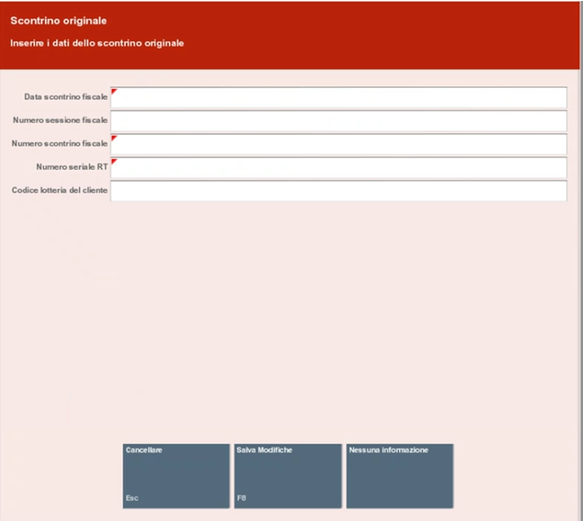
-
Inserisco il codice articolo nella schermata di reso, eventualmente si può cambiare la quantità direttamente modificando la riga da Xstore.
-
Infine, dopo aver selezionato l'UPC da scambiare, indicare il motivo generico dello scambio e poi specificarlo nella seconda schermata.
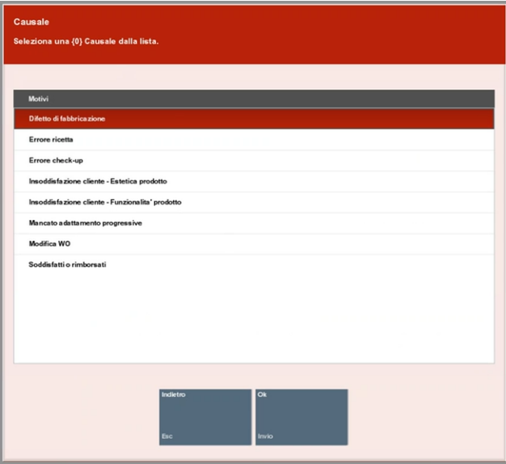
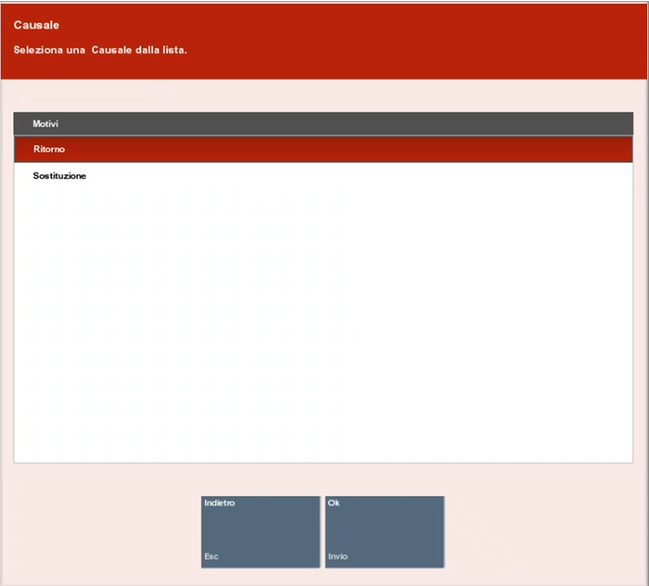
Inserire e ricostruire i dati dell'articolo da rendere recuperandoli dal Lookup Tool e per i prezzi dallo scontrino cartaceo. Questo processo è da svolgersi per tutti gli articoli dello scontrino da rendere, nel caso in cui si volessero rendere più articoli della transazione è possibile aggiungerli in seguito. Per procedere al pagamento seguire il capitolo 7.1.
I documenti che verranno emessi e inviati al cliente sono:
- Documento di una nuova vendita eventuale a seguito del reso
- Documento di reso (nota di credito), che dovrà essere archiviato
Al momento dell'inserimento di un reso non verificato da Acuitas su Ciao è importante sottolineare che l'iva dei prodotti da rendere sarà sempre di default al 22%
Percìò nel caso si trattasse di un reso di prodotti con iva al 4%, come per esempio gli occhiali da vista, è necessario modificare l'importo dell'iva.
Questo processo è fondamentale per evitare di trasmettere prodotti con iva errata all'agenzia delle entrate.
Di seguito vi proponiamo i passaggi da effettuare:
- Una volta inserito il prodotto da rendere, nella voce Imposta sarà presente l'iva al 22% di default inserita dal sistema. Per modificarla premere su Cambiare Articolo
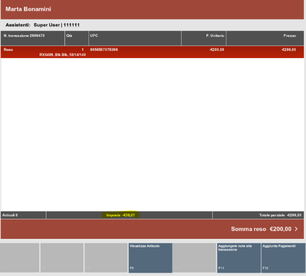
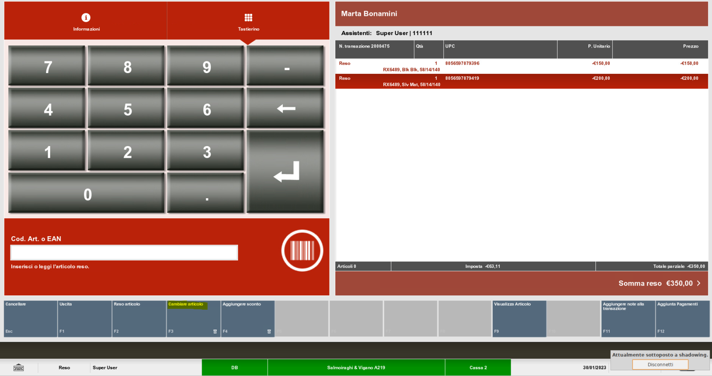
- Successivamente premere Modifica IVA Vendita
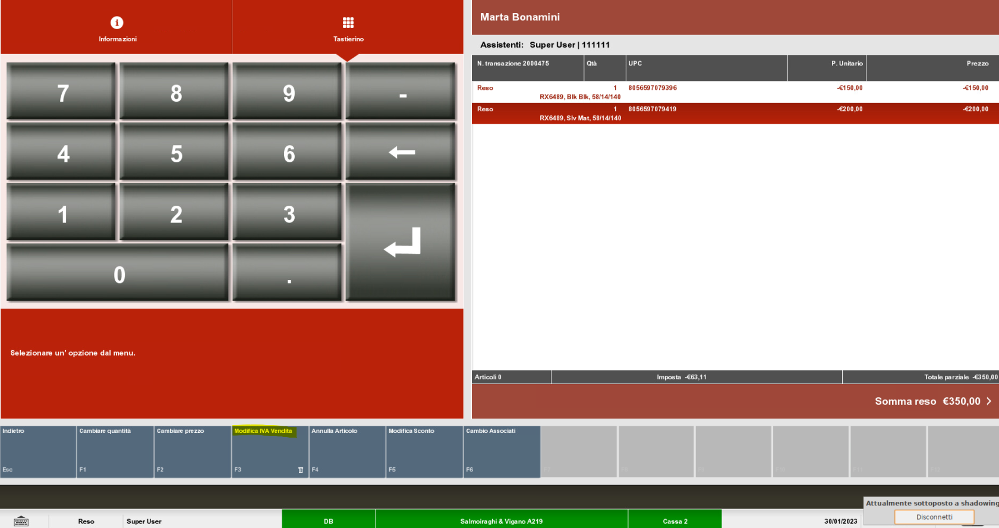
- Premere poi su Modifica Tassazione DM e dare conferma al Pop up che compare
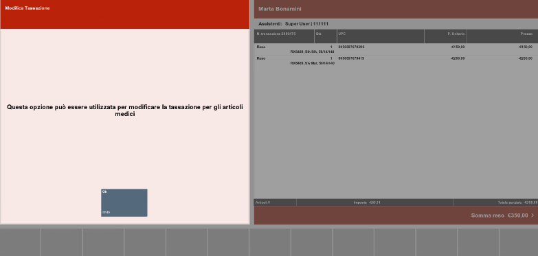
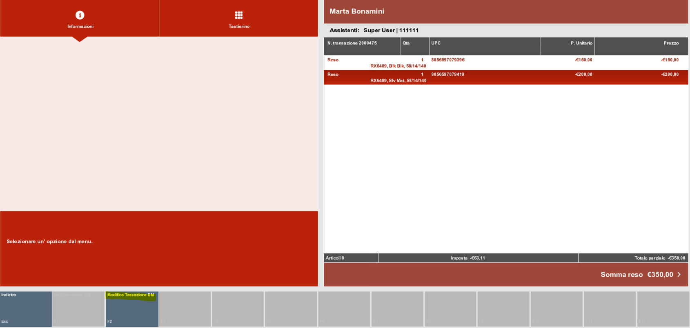
- Scegliere per quale prodotto cambiare l'importo dell'iva
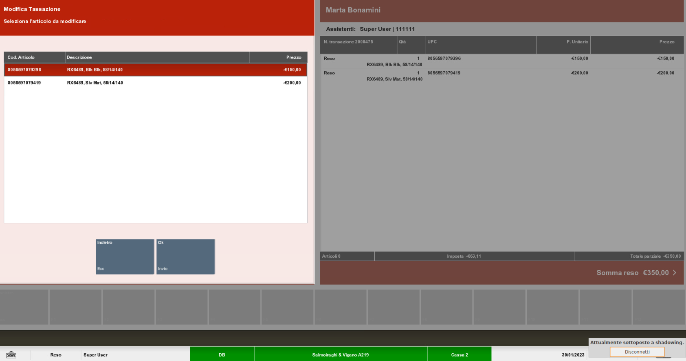
- Una volta selezionato alla voce Imposta la percentuale dell'iva sarà modificata
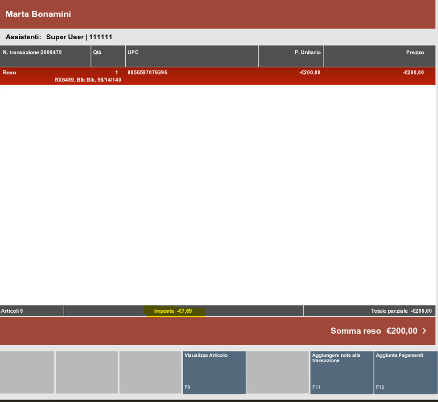
L\'importo dell\'IVA verrà modificato AUTOMATICAMENTE, quindi è necessario prestare attenzione al valore della dicitura Imposta.
Non comparirà nessun Popup che avverte che l\'operazione è riuscita.
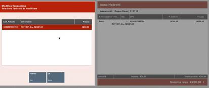
14.6 Scambio con vendita effettuata su Acuitas
Il processo di scambio con vendita effettuata da Acuitas segue esattamente le stesse logiche del reso. È necessario quindi eseguire tutti i passaggi del capitolo precedente fino allo step della selezione della Causale in cui selezionare Sostituzione ed in seguito Scambio selezionando poi il motivo specifico dello scambio. Terminare il processo come uno Scambio effettuato normalmente in Ciao, seguendo le indicazioni che si trovano nel capitolo 14.8 (Scambio su Ciao!).
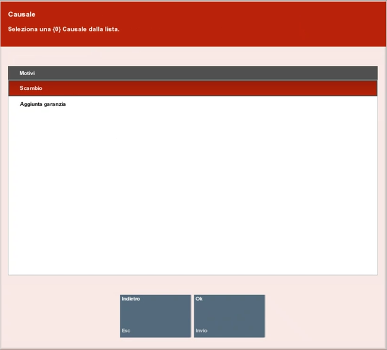
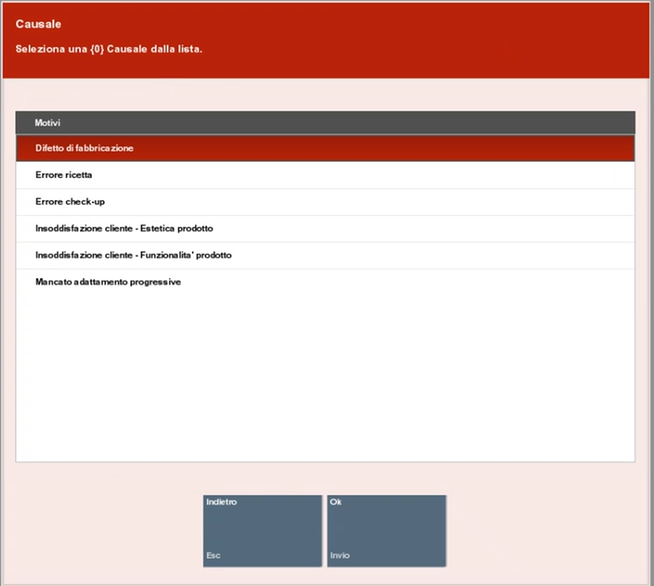
I documenti che verranno emessi ed inviati al cliente sono:
- Documento nuova vendita
- Documento di scambio con la firma, che potrà non essere archiviato.
14.7 Reso gestionale
Esistono tre scenari per i quali è possibile effettuare un Reso Gestionale:
-
Per mancata richiesta di emissione di fattura oltre le 24h.
-
Per mancata erogazione di una garanzia
-
Per modificare WO pre-dispensing (Reso della Caparra)
Solo per il primo store, selezionare Modifica WO come ragione di reso.
Per mancata richiesta di emissione di fattura oltre le 24h: seguire i passaggi 1, 2, 3, 4 del Paragrafo 13.1.
- Selezionare la motivazione Modifica WO nel menù a tendina.
-
Procedere come riportato nel Paragrafo 13.1 dal punto 7 al punto 10.
-
Dopodiché procedere effettuando una nuova vendita come riportato nel capitolo 5. Inserire nel campo ID vassoio il testo: GEST. Su LPA non occorrerà procedere con alcuna operazione. Richiedere l'emissione della fattura cliccando su Stampa Fattura o Nota Di Accredito su Xstore e procedere come riportato nel Paragrafo 6.2.
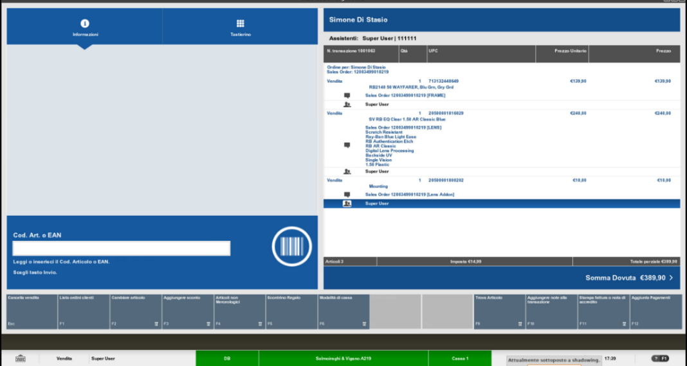
-
Al termine dell'operazione di reso, il sistema dovrà erogare la seguente documentazione:
-
Reso fiscale (nota di credito)
-
Pratica di reso non fiscale in doppia copia, una che va fatta firmare al cliente e si tiene in negozio, l'altra che si consegna al cliente
-
Fattura emessa
-
Scontrino relativo alla nuova vendita
-
Per mancata erogazione di una garanzia: seguire i passaggi 1, 2, 3, 4 del Paragrafo 13.7.
-
Selezionare la motivazione Modifica WO nel menù a tendina.
-
Procedere come riportato nel Paragrafo 13.7 dal punto 7 al punto 10.
-
Procedere effettuando una nuova vendita come riportato nel capitolo 5.
-
Cliccare sul campo Garanzie posto all'interno della sezione Modulo d'Ordine e scegliere la garanzia desiderata.
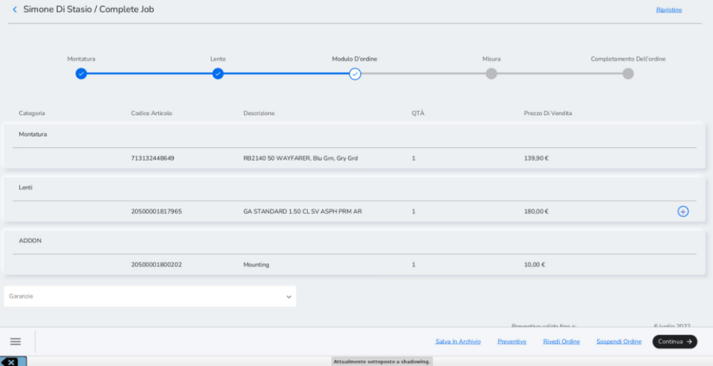
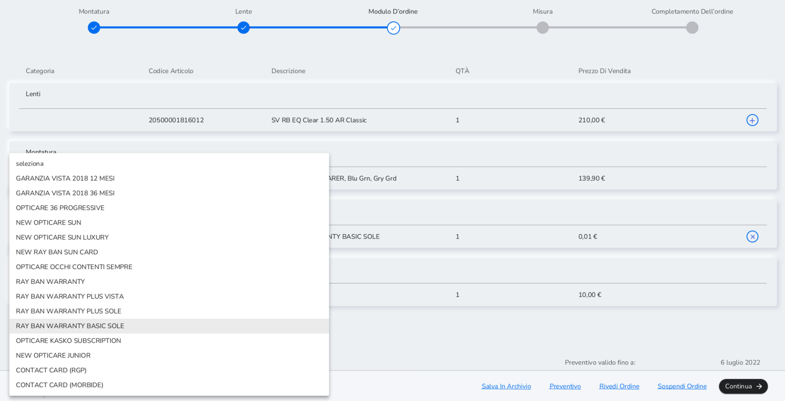
- Procedere con una nuova vendita come riportato nel capitolo 5.
Su LPA non occorrerà procedere con alcuna operazione.
-
Al termine dell'operazione di reso, il sistema dovrà erogare la seguente documentazione:
-
Reso fiscale (nota di credito)
-
Pratica di reso non fiscale in doppia copia, una che va fatta firmare al cliente e si tiene in negozio, l'altra che si consegna al cliente
-
Garanzia
-
Scontrino relativo alla nuova vendita
-
14.8 Scambio su Ciao!
Tramite Ciao! È possibile effettuare scambi. È consigliabile utilizzare il PC di cassa, in quanto l'iPad non ha cassetto contanti.
La modalità Scambio si può utilizzare solo per i seguenti prodotti:
-
Sole non graduato
-
Accessori
Lo scambio non è utilizzabile per prodotti in deposito.
Per tutti gli altri tipi di scambio, come per i prodotti vista, procedere effettuando un reso e una nuova vendita, in quanto, con lo stesso non è possibile emettere la fattura.
Le modalità per effettuare lo scambio sono due:
-
Attraverso il Profilo Cliente, cliccare su Storico Ordini. Tra gli ordini effettuati, cercare il prodotto e cliccare su Scambio.
-
Da iPad è possibile selezionare Cattura ID Scontrino (da ricerca su Customer Order), per catturare il barcode.
Il sistema mostra all'interno dei Risultati Ricerca il cliente desiderato. Dalla sezione Storico Ordini del profilo cliente, cliccare su Scambio, oppure, è anche possibile spuntare la check-box dell'ordine e successivamente cliccare su *Scambiare Ordini Selezionati.
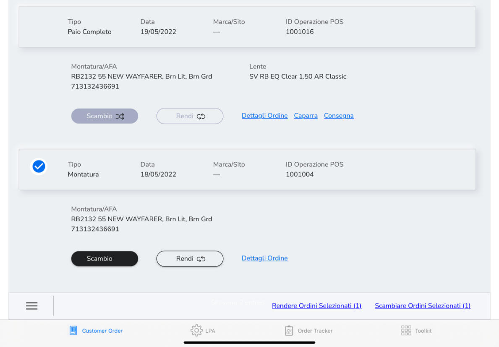
-
Nella Richiesta Scambio:
- Selezionare nel primo campo Ragione Di Scambio la voce: Scambio
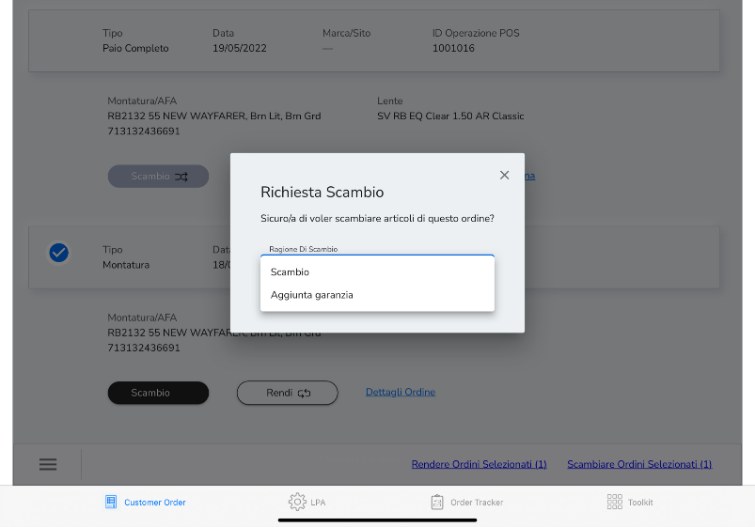
- Selezionare nel secondo campo Ragione Di Scambio: Una delle motivazioni presenti in elenco.
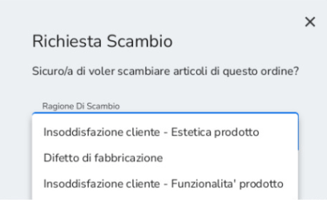
- Cliccare Conferma Richiesta per procedere alla sostituzione.
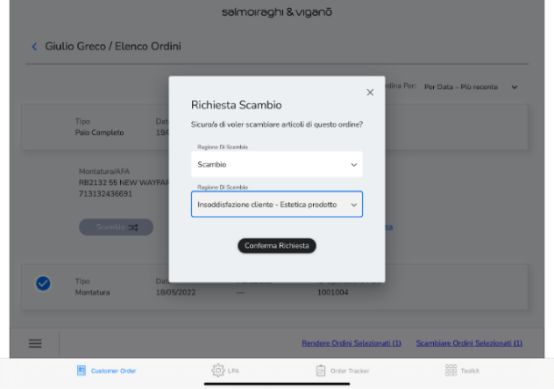
- Completare il flusso come se si stesse effettuando un nuovo ordine secondo le modalità viste nel capitolo 5.
- Inserisco un nuovo codice articolo e Vai A Pagamento.
Il testo in rosso è relativo agli articoli che stiamo sostituendo, il testo in blu a quello che stiamo acquistando. Se la differenza di pagamento è dovuta dal negozio può avvenire in Contanti (non presente su iPad) o tramite Bonifico Da Sede. Se invece è il cliente a dover pagare, può scegliere tra le diverse modalità previste.
-
Inserire un commento in Aggiungi Nota e cliccare Transazione Completata.
-
Scegliere un metodo di ricezione dello scontrino, il sistema erogherà:
-
Vendita fiscale
-
Reso fiscale (nota di credito)
-
Pratica di reso non fiscale: in doppia copia, una che va fatta firmare al cliente e si tiene in negozio, l'altra che si consegna al cliente
-
-
In caso di transazione pari a zero, il sistema restituisce solo gli scontrini non fiscali.*
14.9 Modulo Remake a Sedico
All'interno della libreria di Store360, nella cartela Ciao! potrete trovare il nuovo Modulo Remake da utilizzare per rendere a Sedico le lenti (o CO) con "Difetto di Fabbricazione" o "Errore costruzione lente".
Si tratta di un PDF modificabile da compilare inserendo:
-
Codice Sap del negozio -- es. A144 (nel modulo è preceduto da una "S" non modificabile perché serve a Sedico per recuperare lo store in SAP)
-
N. Ordine Ciao! (nuovo numero ordine che si genera se si effettua il reso in cassa post vendita oppure sempre lo stesso numero dell'ordine originario in caso di Remake pre-vendita effettuato attraverso LPA)
-
Tipo lavorazione -- scegliere tra le tre opzioni dei 3 job type (CO,LO,CJ)
Come da procedura attuale, è necessario SEMPRE COMPILARE E ALLEGARE IL QUESTO MODULO AL PACCO DI RESO, altrimenti non sarà possibile processare il reso a Sedico.
Questo è il modulo che troverete nella cartella Ciao! di Smarty (exStore360).
14.10 Remake pre-consegna ordine su LPA
Nel caso in cui si rilevasse una problematica con l'ordine in fase di ispezione (es: difetto di fabbricazione), e prima di procedere alla consegna dell'ordine, sarà necessario inserire un nuovo ordine Remake a sistema senza passare per il processo di scambio su Ciao!
 Dopo aver effettuato il login su LPA
ricercare l'ordine per il remake tramite il numero di ordine.
Selezionare l'icona per il Remake sulla destra dell'ordine e indicare,
con diversi livelli di dettaglio, il motivo per cui si richiede un
remake (es: specifiche delle lenti non corrette).
Dopo aver effettuato il login su LPA
ricercare l'ordine per il remake tramite il numero di ordine.
Selezionare l'icona per il Remake sulla destra dell'ordine e indicare,
con diversi livelli di dettaglio, il motivo per cui si richiede un
remake (es: specifiche delle lenti non corrette).
Dopo aver indicato la causale per il remake nei diversi livelli di dettaglio, scegliere il Job Type per il remake dal menù a tendina e cliccare su Continua.
14.11 Remake post consegna
Le modalità per le quali è possibile effettuare delle richieste di Remake sono:
-
Prima della consegna: Se durante la procedura di ispezione (vedere capitolo 0), ci si accorge che l'ordine arrivato dal laboratorio presenta dei difetti, si procede con una richiesta di remake tramite LPA (vedere capitolo 0).
-
Dopo la consegna: Se il cliente si accorge che l'articolo presenta difetti o anomalie, in tal caso, si procede avviando una pratica di reso e successivamente ad una nuova vendita.
Dal punto di vista della tracciabilità, una volta che si riceve l\'occhiale in store il cliente riceve un'e-mail che l\'occhiale è pronto per essere consegnato. Nel caso in cui dopo l'ispezione ci si accorga che l\'occhiale necessita di un remake, è
necessario chiamare il cliente e avvisarlo.